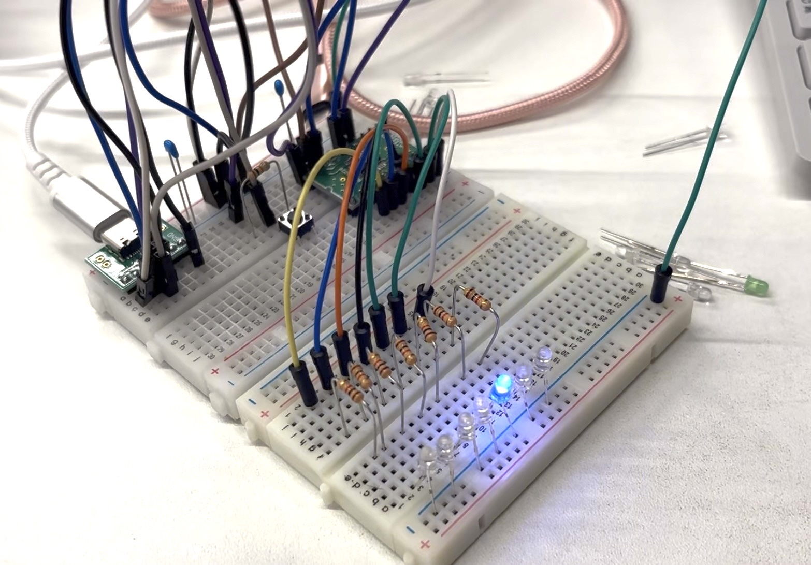
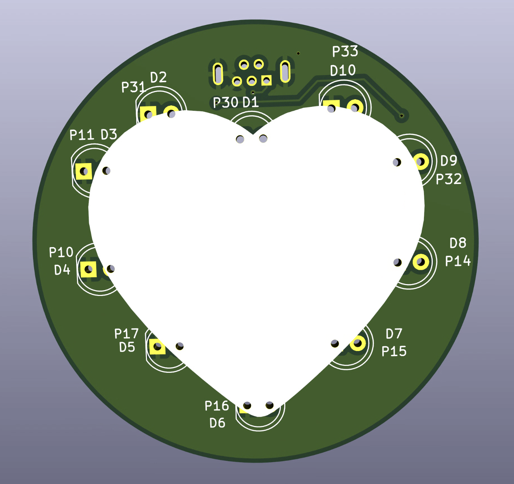
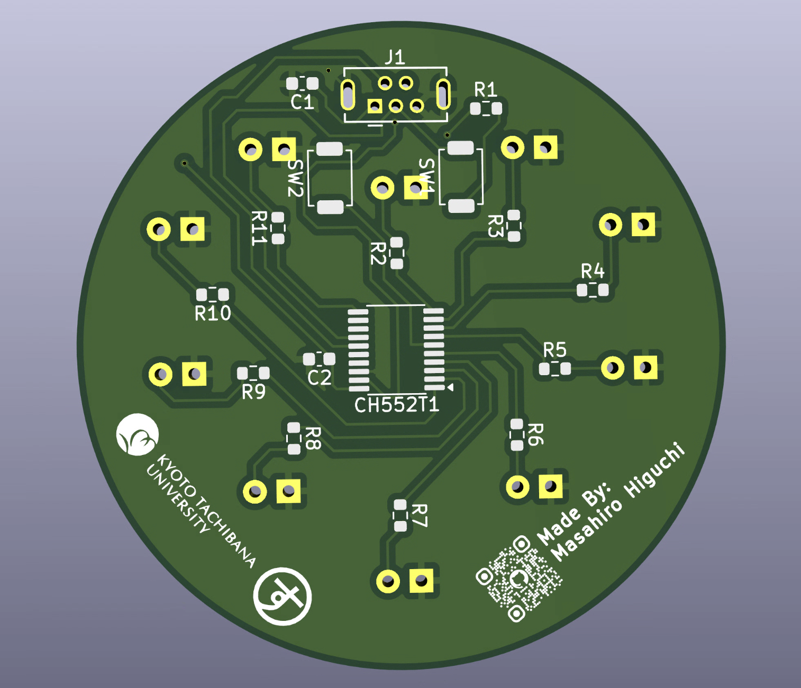

小中学生向け電子工作の教材開発
MCU付きハート型LED基盤の教材

このレポートでは、小学生・中学生を対象とした、電子工作ならびに、ハードウェアプログラミングを学ぶことができる教材の開発を実験的に開発した内容をここにまとめる。 大学周辺に住む小学生・中学生を対象に、情報技術を体験しながら学べる教室の一環として実施しているものである。プログラミングや電子工作を学習できる教材を開発したことが、本取り組みを始めるきっかけとなった。 参加者1人辺りに1セットの教材を配布し、各自で電子工作とプログラミングを体験してもらう形式を想定している。また、一人当たりのセットの予算に制約があり、可能な限り低コストを目指す必要があった。
開発概要
この開発では、初級者向けの電子工作教材を作成することを目的としている。また、教育的効果の検討や費用的な制約を考慮した設計が必要である。 そのため、難易度は簡単なもので、参加者がプログラミングした制御の動きを理解しやすい形でアウトプットする必要がある。さらに、コーディングツールではビジュアル型を採用し、直感的に操作できるようにする必要がある。 このような観点から以下のような目標を設定した。
- 目標1: プログラムのデバッグ動作がハードウェア上で明確に現れること
- 目標2: ビジュアル型プログラミングツールを使用すること
- 目標3: 電子部品は一つの基板に実装すること
- 目標4: 低コストでの教材提供を実現すること
MCUの選定

図2 CH552Tの実験
MCUとしてCH552Tを採用した。 CH552TはC言語でのプログラミングが可能であり、Arduino IDEにもボードライブラリを追加することで対応できる。また、1個あたり約100円という非常に安価な価格で入手できるため、低コストで教材を提供できる点も大きな利点である。 さらに、CH552Tは豊富なGPIOピンを備えており、多様なセンサやアクチュエータを接続できる。以上の点から、CH552Tは今回の教材開発に最適なMCUであると判断した。 なお、Arduino Micro互換機の使用も検討したが、そちらは別途シリアル変換のための回路が必要となる。一方、CH552Tにはシリアル変換機能が内蔵されているため、回路設計を簡素化できる点も選定理由の一つである。
基板の設計
基板上のすべての電子部品を実装するために、Kicadを用いて回路設計および基板設計を行い、PCBWayを中心に周辺回路を配置し、各センサやアクチュエータとの接続を考慮したレイアウトを作成している。 本設計では、10 個の発光ダイオードをハート型に配置し、小学生・中学生が視覚的に楽しめるよう工夫した。また、基板サイズを最小限に抑えることで、製造コストの削減にも配慮した。 基板上に実装する発光ダイオード以外の電子部品には表面実装タイプを採用した。抵抗などの部品ははんだ付け点数が多く、体験教室の実施時間の制約や、小学生・中学生には作業難易度が高いことが懸念されるためである。 表面実装化により、参加者が発光ダイオードの実装のみになり、時間内に体験できるようにした。 なお、発光ダイオードの配置はハート型に限らず、星形や特定のロゴの輪郭を模したデザインにも変更可能である。子どもたちが好みに応じて模様を選べるため、体験意欲の向上も期待できる。
-

図3 設計した基板 表面 -

図4 設計した基板 裏面
PCBWay+で公開したプロジェクトは、こちらから確認できます。
電子部品の試験実装

本開発では、試験的な開発であることから、各部品の実装を個人設備で行なった。 表面実装部分は、ステンシルを使用してはんだペーストを塗布し、小型なホットプレートでリフローを行なった。
開発環境

小学生・中学生でもハードウェアプログラミング可能な環境を構築するには、ビジュアル型プログラミングを用いた開発は初期段階では有効であると考える。 今回は、ArduBlockを用いて開発する想定で環境構築を行なって実験した。ArduBlockは、Arduino IDE上で動作するビジュアル型プログラミングツールであり、UI上で作成したブロック型推移図をArduino C++のコードに変換可能である。 よって、今回の教材開発においても、ArduBlockを用いることで、小学生・中学生でも直感的にプログラミングを体験でき、C++言語に変換されることから、将来的にテキスト型プログラミングへの興味を持つきっかけになると期待する。